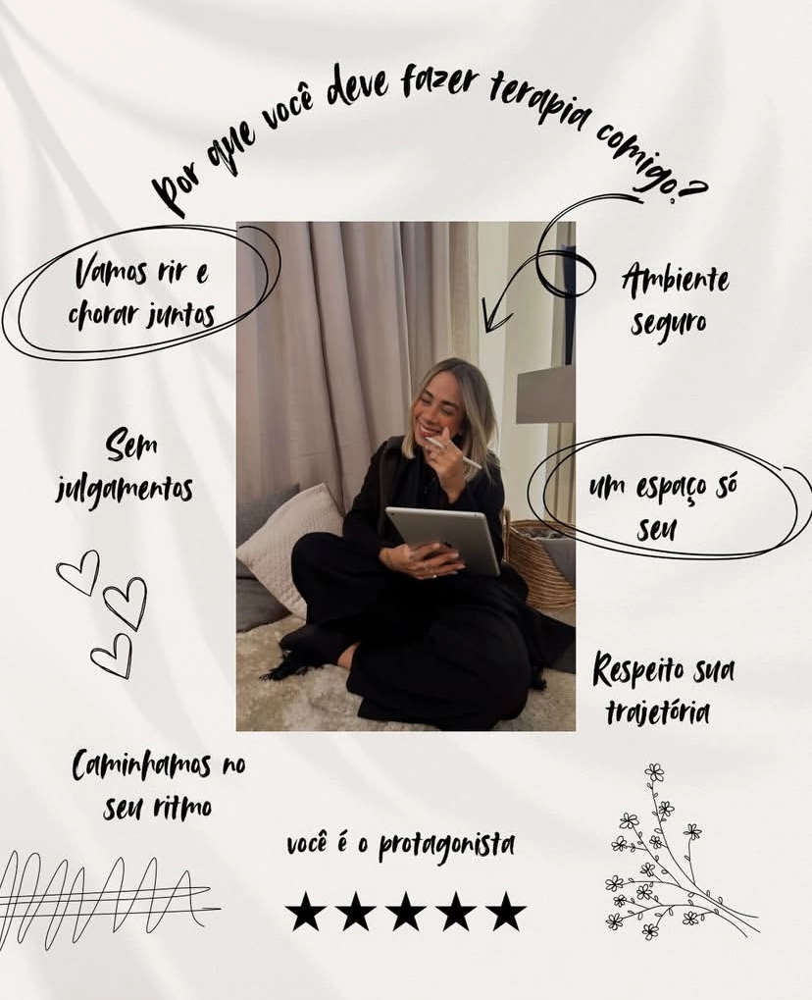

O barulho do mundo lá fora não entra aqui. Um espaço dedicado a acolher a sua história e transformar a sua angústia em caminho.
O atendimento digital permite que o processo de análise se integre à sua rotina, no lugar onde você se sente mais segura. Sustentamos o rigor clínico através de uma plataforma protegida.
Meu papel é ser o silêncio necessário para que a sua voz possa emergir.

Atendimento Online • Presença Global
Regulação emocional e silenciamento da ansiedade severa. Protocolo clínico para restaurar a base.
Resgate & AlívioA análise como ferramenta de expansão de consciência. Inteligência emocional aplicada à sua potência.
Consciência & Liderança